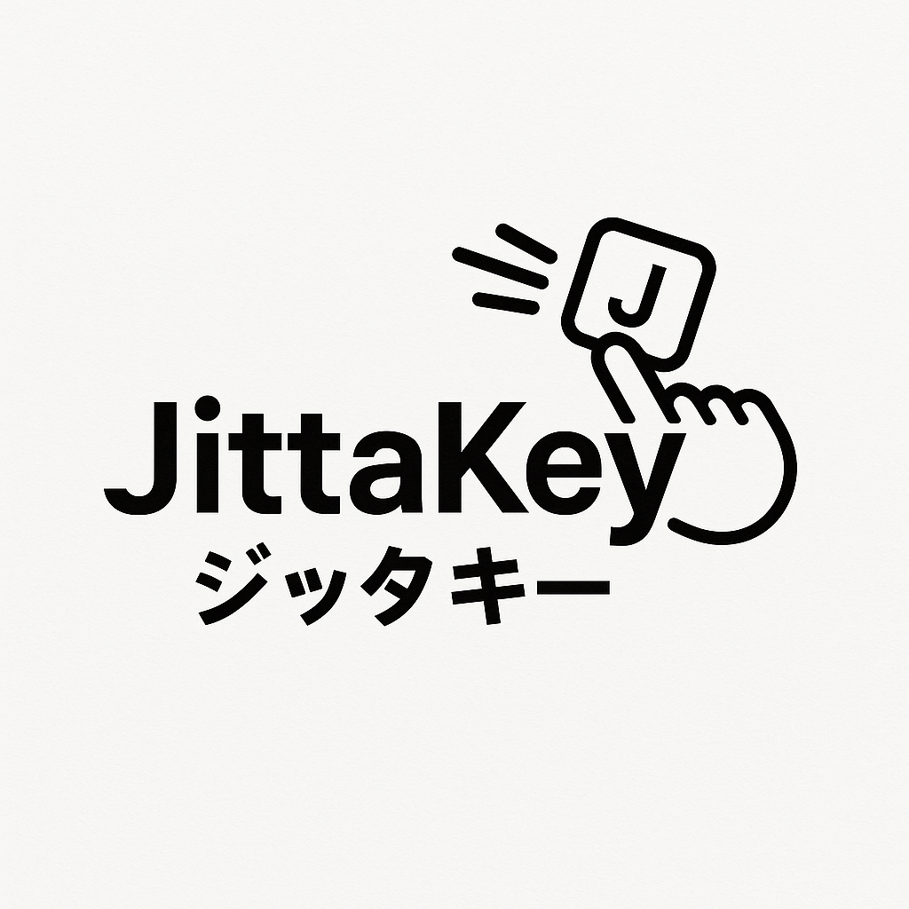

Welcome to JittaKey
A revolutionary Japanese input method that simplifies and speeds up your typing.


🔑 Key Features
- Reduces keystrokes by approximately 30% on mobile apps and 20% on keyboards compared to Romaji input.
- WYSIWYG typing experience – type exactly what you see.
- 1-stroke input for frequently used Japanese characters (e.g., い-row, small vowels, っ, ん, ゃ, ゅ, ょ).
- Mnemonic mapping for unused keys (e.g., Q = ん, F = を, J = ゆ, etc.).
- Compatible with both mobile app and custom hardware keyboards.
🧠 Mnemonic Mapping for Unused Keys
- Q → 「ん」: Think of "Queueing" – the ending "ing" sounds like 「ん」
- F → 「を」: The katakana character 「ヲ」 resembles the shape of the letter F
- J → 「ゆ」: From “Juudou” (Judo), which starts with the “ゆ” sound
- L → 「よ」: "YOLO" includes the "yo" sound, which maps to 「よ」and it includes letter L
- X → 「―」: X-mas (Christmas) evokes hyphen (ー) used in Japanese
- C → 「っ」: The sharp "CHU" sound suggests the small 「っ」 character
- V → 「ヴ」: Pronounced the same as the English letter "V" (vu sound)
📱 iPhone Demo:
📱 iPad Demo:
ℹ️ Special Input Rule
To type "きょ", just type き + ょ – exactly as shown on the key layout.
To type "きあ", you must type kia (not ka), otherwise it may be interpreted as "か". This rule applies also to: kii = きい, kiu = きう, kie = きえ, kio = きお.